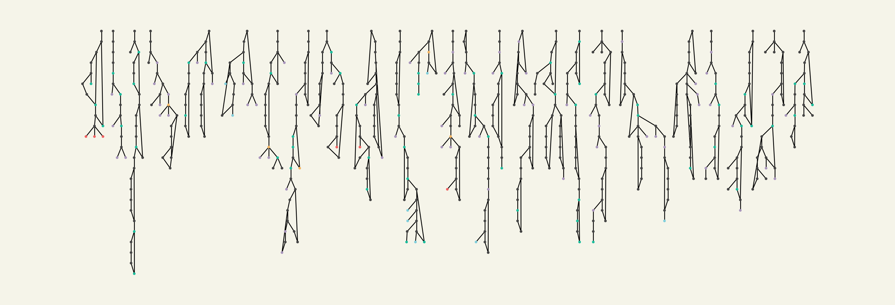

By
By Contents
import dmol
import networkx as nx
import rdkit, rdkit.Chem, rdkit.Chem.rdDepictor, rdkit.Chem.Draw
import networkx as nx
import numpy as np
import random
import matplotlib.pyplot as plt
from networkx.drawing.nx_agraph import pygraphviz_layout
import requests
import time
def custom_layout(G, prog, ratio, args):
import pygraphviz
A = nx.nx_agraph.to_agraph(G)
A.layout(prog=prog, args=args)
A.graph_attr.update(size=2.1)
node_pos = {}
for n in G:
node = pygraphviz.Node(A, n)
try:
xs = node.attr["pos"].split(",")
node_pos[n] = tuple(float(x) for x in xs)
except:
print("no position for node", n)
node_pos[n] = (0.0, 0.0)
return node_pos
def random_compound(n=10, filter_length=100):
cids = np.random.choice(10**8, size=10).astype(str)
s = ",".join(cids)
url = f"https://pubchem.ncbi.nlm.nih.gov/rest/pug/compound/cid/{s}/property/IUPACName,CanonicalSMILES/JSON"
try:
reply = requests.get(
url,
params={"Threshold": 90, "MaxRecords": 1},
headers={"accept": "text/json"},
timeout=10,
)
except requests.exceptions.Timeout:
print("Pubchem seems to be down right now ️☠️☠️")
return []
data = []
for i in range(n):
try:
smi, name = (
reply.json()["PropertyTable"]["Properties"][i]["CanonicalSMILES"],
reply.json()["PropertyTable"]["Properties"][i]["IUPACName"],
)
if len(name) < filter_length and "." not in smi:
data.append((smi, name))
except KeyError as e:
continue
return data
elements = set()
elements.add(6)
def smiles2graph(sml):
m = rdkit.Chem.MolFromSmiles(sml)
if m is None:
return None
# m = rdkit.Chem.AddHs(m)
G = nx.Graph()
for a in m.GetAtoms():
elements.add(a.GetAtomicNum())
G.add_node(a.GetIdx(), element=a.GetAtomicNum())
for j in m.GetBonds():
u = j.GetBeginAtomIdx()
v = j.GetEndAtomIdx()
G.add_edge(u, v)
return G
examples = []
N = 1000
while len(examples) < N:
examples.extend(random_compound())
print(len(examples), end=",")
time.sleep(0.2)
8,
14,
21,
29,
35,
41,
49,
55,
62,
68,
76,
82,
88,
94,
101,
104,
111,
116,
122,
129,
136,
143,
149,
157,
165,
172,
181,
188,
194,
199,
206,
212,
216,
225,
233,
239,
246,
255,
261,
269,
276,
281,
288,
296,
303,
311,
317,
324,
334,
339,
348,
354,
361,
371,
378,
383,
392,
400,
408,
415,
424,
429,
435,
443,
449,
457,
466,
472,
481,
488,
496,
500,
504,
511,
516,
520,
528,
535,
542,
549,
553,
558,
565,
571,
576,
583,
590,
597,
605,
613,
620,
626,
629,
637,
644,
651,
656,
662,
669,
676,
681,
689,
697,
702,
709,
715,
720,
728,
734,
742,
748,
757,
764,
770,
775,
784,
792,
796,
803,
810,
819,
826,
834,
843,
848,
855,
861,
869,
875,
881,
891,
898,
906,
912,
920,
928,
936,
945,
951,
959,
966,
971,
979,
986,
995,
1003,
G = None
for smi, _ in examples[:25]:
g = smiles2graph(smi)
if g is None:
continue
if G is None:
G = g
else:
G = nx.disjoint_union(g, G)
lelements = list(elements)
lelements.sort()
lelements.remove(6)
lelements.insert(0, 6)
lelements
[6, 7, 8, 9, 16, 17, 35]
ed = {k: i for i, k in enumerate(lelements)}
c = [f'C{ed[d["element"]]}' for n, d in G.nodes(data=True)]
fig = plt.figure(1, figsize=(15, 5))
pos = custom_layout(G, prog="dot", ratio=1.5, args="-Gmaxiter=5000")
# pos = nx.layout.spring_layout(G, iterations=100)
nx.draw(G, pos, node_size=5, node_color=c)
ax = plt.gca()
ax.set_facecolor("#f5f4e9")
ax.axis("off")
fig.set_facecolor("#f5f4e9")
plt.tight_layout()
plt.savefig("mols.png")

max([pos[i][0] for i in range(len(pos))]), max([pos[i][1] for i in range(len(pos))])
(6208.0, 1674.0)